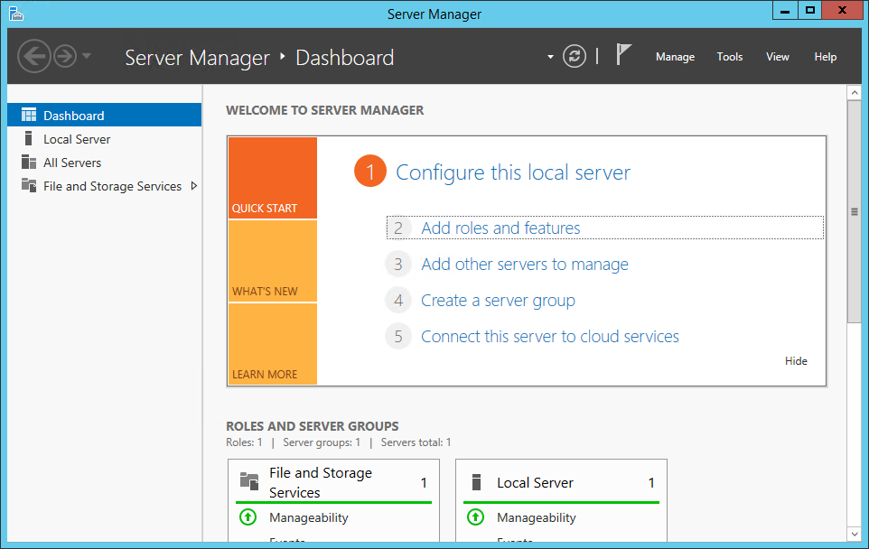

EOM application server runtime error
When accessing the EOM application in a browser, an error message that the server has encountered a runtime error is displayed.
Use the following information to determine the problem’s possible cause and solution.
Possible causes
This error may be caused by any of the following factors:
The EOM application requires the core and system services in Administration Console to run in order for the application page to load.
Solution
Start all System Services in Administration Console. Follow these steps:
1.In the EOM server machine, launch the Administration Console application.
2.In the Status and Control pane, select Service Monitor. The following window is displayed.

3.Right-click on System Services, and then select Start All Services.
4.Open the EOM application page in a web browser, and then verify if the EOM application page loads successfully.
The EOM server application requires .NET Framework features to be installed on its host machine. For more information about the software prerequisites for the EOM server, refer to EOM Software Prerequisites.
Solution
Install the .NET Framework features in the EOM server machine. Follow these steps:
1. In the EOM application, launch the Server Manager application. The following window is displayed.

2.Select Add roles and features. The application displays the Add Roles and Features Wizard screen.
3.Select Next. Keep selecting Next until the Select Features screen is displayed.

4.Expand the .NET Framework 4.5 Features pane, and then expand the WCF Services pane.
5.Select the HTTP Activation feature check box. The Add Roles and Features Wizard window is displayed.
6.Select Add Features. The application redisplays the Select features screen.
7.Select Next. Keep selecting Next until the Confirm installation selections screen is displayed.
8.Select Install. The application installs the .NET Framework features to the system.
9.Restart the machine.
10.Once the machine restarts, open the EOM application page in a web browser. Verify that the EOM application page loads successfully.